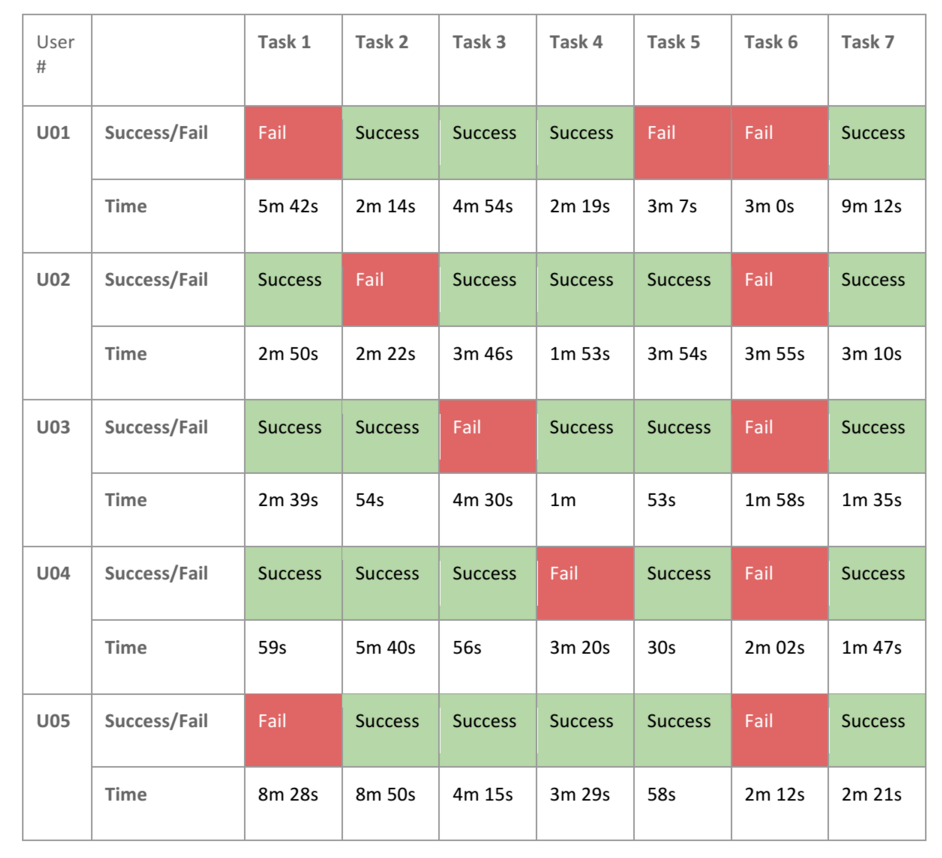

Course Project
Copyright is held by the owner/author(s).
UMSI 2014 Winter Semester, SI 622 Need Assessment and Usability Evaluation
Introduction
SI 622 is a project-based course that students should work with a business client
during the whole semester. My team worked with Pilot.ly, a
start-up company which services video streaming of TV shows. It provides pilot episodes
before the TV show goes on air, receiving feedback from viewers and analyzing it for
the content provider.
Main screen of UM MHPE
Interaction Map
For better understanding of the application, we started with drawing an interaction map.
Interaction map of Pilot.ly.
Created by Jeseok Lee. Adobe Illustrator.
Survey
In order to help develop their product, our team designed a survey that addressed
their target audience. We sought to identify attitudes and behaviors about online
streaming in order to develop recommendations that can be implemented into Pilot.ly’s
platform.
Our findings thus center on these 3 major themes of feedback. These findings include:
Video content is essential to motivating users to rate, comment and/or review on a website
Altruism and social engagement motivates users to respond to surveys while rewards do not
Our two survey groups respond differently to the product; the existing database responds more
positively to Pilot.ly while those out of the Pilot.ly database have a more neutral approach
With these findings, our team has created a series of corresponding recommendations. These recommendations include:
Engaging users with existing comments/reviews/ratings around the content in order to perpetuate exchange in feedback
Developing a rating system in addition to comments and/or reviews
Appealing primarily to the social and altruistic nature of the user while approaching rewards in a secondary manner
Encouraging current Pilot.ly users to extend to more general audiences while also creating options that appeal to both parties
You can refer to here to see the entire survey report.
Interview
We gathered several insights into the motivations and values of Pilot.ly’s future users.
Our key findings include that most interviewees do not appreciate interruptions during
their viewing experience and that accessibility, convenience and flexibility are important
factors in watching a TV series. Additionally, most interviewees expressed willingness to
provide quick feedback to surveys and stressed the importance of understanding the purpose
/intention of a survey before they fill it out.
Personas and Scenarios of Pilot.ly. All created by Jeseok Lee. Adobe Illustrator.
Comparative Analysis
We compared Pilot.ly with several competitors that offer online streaming services. A total
of 6 competitors (Amazon Prime Instant Video Originals, Hulu Plus, Netflix, HBO GO, CBS,
and Vudu) compiled between Pilot.ly and our team were chosen and evaluated under several
different categories and key dimensions. Together, our team analyzed and discussed our data
and research to create a matrix that compares Pilot.ly to other competitors.
We created 5
recommendations that Pilot.ly can take into consideration to further improve their website.
These recommendations include: 1) featuring a search bar in order to ease a user’s browsing
experience, 2) incorporate a rating system that allows user to leave quick, easy feedback,
3) replace the current DISQUS widget with Facebook to enhance the user commenting process,
4) incorporate a sharing function in the video player or have it accessible during video
play, and 5) include a caption feature in the video player to include audiences who require
subtitles or have a disability.
Visualization of Comparative Analysis of Pilot.ly. All created by Jeseok Lee. MS Excel.
Usability Test
5 testers and 1 pilot tester were recruited from the Ann Arbor area to complete 7 tasks
that our team designed. We sought to understand how users perceive the site and determine
any sort of issues that they encountered.
Sample and Recruit
The primary target user group of Pilot.ly consists of young professionals and college
students. These users should be active TV watchers, be tech-savvy, and consider themselves
social media pioneers. However, this website is designed for general users who watch TV
regardless of age, tech adoption, and social media involvement. Considering our recruit
flexibility, we used the following criterion to select our subjects:
Balanced gender in sample group
Aged 18-30
Students and young professionals
Watches more than 1 hour of TV per week
Has streaming platform experience
No experience using Pilot.ly
Test design
After acknowledging Pilot.ly’s key features with our client, we designed a protocol draft, 7 tasks, several follow up questions, and a pre-test and post-test questionnaire within our team. All tasks and follow up questions were designed to examine essential features in-site (see Appendix Protocol and Questionnaire). These essential features include:
User on-boarding process (sign-up, sign-in, and tutorial)
Browsing and finding pilot shows
Watching shows
Commenting
Sharing
Changing password in Profile page
My Library page
Analysis process
After completing 5 usability tests, we reviewed and organized all notes for each user. We
discussed and combined our findings for all 7 tasks together, covering how each problem
occurred, how many subjects experienced that same problem, and then ranked that problem’s
severity. Issues ranked level 4 severity were listed in the Findings section of this report
while issues with severity levels 0-3 are located in the Appendix. We also acknowledged
issues pertinent to Pilot.ly but not purely usability issues in the Discussion section. The
same Nielsen severity scale used in our Heuristic Evaluation report was used in this
Usability report.

Result of User Test. All created by Jeseok Lee. Google Spreadsheet.
The most severe issues include:
Users cannot find a search function and indicate its necessity to find the programs they want
Users perceive “Watch Now” and “Add to my Library” as 2 separate concepts and do not understand why they are located in the same button
Users have difficulty maneuvering through the website
Users have difficulty controlling the DISQUS commenting widget
Users who utilize Facebook login cannot comment successfully on TV programs
Users cannot change their password successfully in their profiles
Conclusion
This usability test report concludes our research for the Pilot.ly platform. We have
completed an interaction map, interviews & personas, a survey evaluation, a competitive
analysis, a heuristic evaluation, and now usability testing. The data that we analyzed in
each report can be used to help enhance Pilot.ly’s streaming service before their commercial
launch.
We created a video to effectively describe problems and potential oppportunities of Pilot.ly
as our final result.